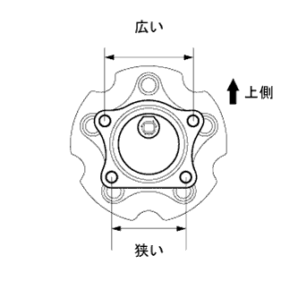
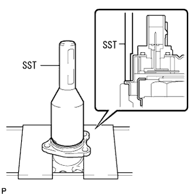
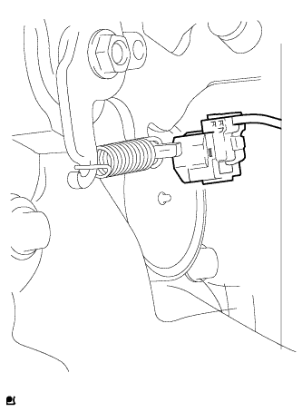

Skid Control Sensor (FF) Installation |
| 1. Install Skid Control Sensor |
Using white gasoline, wipe off sealant, etc. from the skid control sensor installation surface.
 |
Install a new skid control sensor to the rear axle hub & bearing assembly LH so that its connector is at the uppermost position when installed on the vehicle.
 |
Using SST and a press, press in a new skid control sensor up to the end face of the rear axle hub & bearing assembly LH.
| 2. Install Rear Axle Hub & Bearing Assembly LH w/ Skid Control Sensor |
 |
Install the rear axle hub & bearing assembly LH w/ skid control sensor to the rear axle carrier with the 4 bolts.
| 3. Inspect Rear Axle Hub & Bearing Assembly Axial Play |
 |
Using a dial indicator, check the bearing axial play near the inner circumference (flange) of the axle hub.
| 4. Inspect Rear Axle Hub & Bearing Assembly Runout |
 |
Secure the rear disc with the hub nuts.
Using a dial indicator, inspect the runout at 10mm inside the outer edge of the rear disc.
| 5. Install Rear Disc |
 |
) Align the matchmarks on the disc and axle hub, and install the disc.
| 6. Install Rear Disc Brake Caliper Assembly LH |
 |
Install the rear disc brake caliper assembly LH to the rear axle carrier with the 2 bolts.
| 7. Connect Parking Brake Cable Assembly NO.3 |
 |
Pass parking brake cable assembly No.3 through the guide of the rear disc brake cylinder assembly LH.
 |
Connect the cable end to the operating lever of the rear disc brake cylinder assembly LH.
| 8. Install Parking Brake Lever Protector |
 |
Install the parking brake lever protector to the parking brake cable assembly No.3.
| 9. Install Skid Control Sensor Wire |
 |
Connect the skid control sensor wire connector.
| 10. Install Rear Tire |
| 11. Connect Battery Negative Terminal |
| 12. Inspect Test Mode (Speed Sensor Circuit) |
)| 13. Setting Procedure When Disconnecting/Reconnecting Battery Terminal |
)| 14. Adjust Rear Wheel Alignment |
)